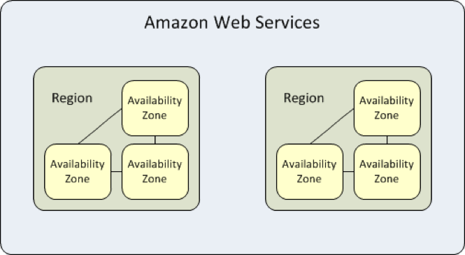
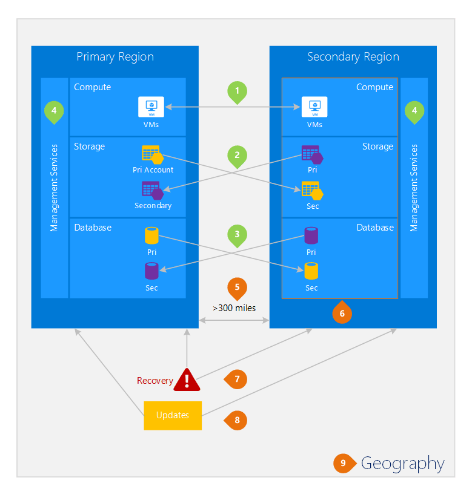
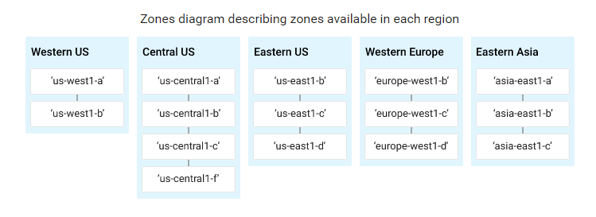

Cloud Disaster Recovery
Disaster Recovery in the Cloud
A guide for the selection of disaster recovery strategies when deploying applications in cloud environments.
The availability and fast provisioning capabilities of external cloud providers has led to a desire to use these services for the development and hosting of applications.
This paper outlines the acceptable practices for the utilisation of these environments to retain policy compliance. It does not cover Security & Data protection requirements, nor does it cover low level strategies or solutions to meet Resilience requirements which will be expanded on in a later paper.
Existing Disaster Recovery strategies are based on prevention of avoidable Incidents which may lead to loss of site (where possible) and recovery to a sufficiently independent site unaffected by the original impact within the business defined Recovery Time Objectives (RTO) and Recovery Point Objectives (RPO).
Currently this is achieved through a robust, detailed assessment of on-premises DC capability, with existing sites undergoing an annual review and risk assessment to determine sufficient independence of DC pairs in terms of Network, Power and Geographic resilience to natural disaster (fire, flood, earthquake etc.).
When dealing with external sites owned by Cloud providers, we are limited in the types of assurance we can provide, as the detailed data currently used is not readily available, as such there is a slightly increased risk in this approach and therefore demonstrating compliance becomes harder.
We will cover the 3 largest cloud providers AWS (Amazon), Azure (Microsoft) and GCP (Google) as this will demonstrate the high level principles applicable to any provider, but also demonstrate the variable approach that currently exists. DRaaS vs. Full Cloud Resilience
Cloud providers enable correctly designed workloads to use Cloud infrastructure for DR as a Service, and also the reverse, where on-premise can be utilised as a DR environment for cloud hosted workloads. These strategies are not covered in this paper as the assumption is that there would likely be limited opportunities for this approach and that DR for a system or application deployed in the cloud would be provided by a cloud solution. AWS
AWS is by far the largest and best known cloud provider and has the longest history and largest feature set. AWS approach to resilience is predicated by scale - the demand on their service has led to a different approach to that taken by those who own their own DCs. Availability Zones vs. Regions
An Availability zone is >= 1 DC, the reason for having more than 1 DC in an availability zone is primarily one of scale,1 in that running a DC beyond a certain level of power and scale was less optimal than having another DC and loss of a DC would have a much greater impact.
A Region consists of multiple Availability zones which are close in proximity and have fast networking connectivity. We would therefore consider this analogous to physically separated halls of an extremely large DC, allowing high availability protection of workloads if configured to run across multiple AZs.
We would therefore class a region as a single site and therefore any controls relating to a site apply at a regional level for AWS.

AWS provide a best practice guide for Disaster Recovery,2 although this focuses more on the utilisation of AWS for DRaaS solutions for customers who do not operate their own paired sites.
AWS regional failures are not uncommon,3 despite AWS attempting to provide as much local isolation and resilience as possible. AWS themselves operate with a 99.95% availability target4 for EC2 in a region prior to any workload actually being deployed (S3 being 99.9%), therefore systems should be designed to reflect this availability figure.
Therefore best practice deems that Disaster Recovery for systems or applications deployed on AWS must use either multi-region capability, or a combination of self-hosting and AWS (assuming the same rules about site separation apply).
Azure
Azure offers a slightly different model to AWS, but a model that is more aligned to traditional configurations. Azure offers the concept of Regional pairing, where regions provide geographical isolation for Disaster Recovery, with each region being > 300 miles apart. As with AWS, a region is equivalent to a site. Microsoft provide a best practice guide to Business Continuity.5

As with AWS, any Azure deployments should not rely on a single region to provide DR, and systems or applications must use the paired region capability or a combination of region + on-premises deployment where suitable. GCP
Google DR guidance6 aligns with best practice and the equivalents from AWS and Azure, in that zones provide High Availability, but Disaster Recovery must be provided through multi-region deployment and a suitable strategy to meet business RTO and RPO requirements.
“To build disaster recovery capable applications that can withstand the extended loss of entire regions For data, use one or more of the following strategies: Use managed, multi-regional storage services such as Cloud Storage or Cloud Datastore. Use zonal or regional resources, but snapshot data to a multi-regional resource such as Cloud Storage or Cloud Datastore. Use zonal or regional resources, but manage your own data replication to one or more other regions. For compute, use the following strategy: Use zonal or regional resources, such as Compute Engine or App Engine, but manually or automatically bring up your application in another region (on regional failure) referring to copies of your primary data if the data is not already in a managed, multi-regional resource.”
GCP refer to a Zone as a cluster within a DC and a Region as Data Centre Campus with multiple independent buildings.

Summary
All major cloud providers offer a similar approach to resilience and Disaster Recovery. Local High-Availability requirements are provided by Availability Zones within a single region, this is equivalent to local clustering within a single DC, but with enhanced physical resilience. Disaster Recovery recommendations from the three largest Cloud vendors require systems to have a multi-region solution.
Current policy requirements are written to ensure sufficient risk assessment is carried out to prevent an incident impacting both production and chosen partner site. Due to the lack of information required to conduct detailed, equivalent site assessments for cloud provider infrastructure we have to assume that a Region offered by a cloud provider is the equivalent of a site as covered by our policy and therefore compliance must be demonstrated at this level when considering isolation. Existing Mandatory Procedures indicate that Resilience & Continuity are engaged to approve site selections.
Multi-region solutions imply additional complexity due to Networking and latency issues, but must be chosen for critical services, unless using a combination and local hosting to provide capabilities. Chosen solutions must demonstrate how they will achieve the Recovery Time and Recovery Point Objectives specified by the service owner.
Additional guidance on resilience, and DR patterns for cloud deployments will be provided in a future paper.
Patterns of Cloud Resilience
Pilot light Availability vs. Disaster Multi-Cloud
Traditional vs. Rebuild
Cloud Resilience Principles
Recreatability
Horizontal Scaling
Stateless Services
Immutable deployments - no changes possible to prod systems, changes have to be made, tested and deployed.
-
AWS Innovation at Scale: https://youtu.be/JIQETrFC_SQ ↩︎
-
AWS DR guidelines: https://d0.awsstatic.com/whitepapers/aws-disaster-recovery.pdf ↩︎
-
AWS S3 outage: https://www.theregister.co.uk/2017/03/01/s3_outage_exposes_amazonian_internet_bottleneck/ ↩︎
-
AWS EC2 SLA: https://aws.amazon.com/ec2/sla/ ↩︎
-
Azure BC best practice guide : https://docs.microsoft.com/en-us/azure/best-practices-availability-paired-regions ↩︎
-
Google DR guidance: https://cloud.google.com/solutions/disaster-recovery-cookbook ↩︎